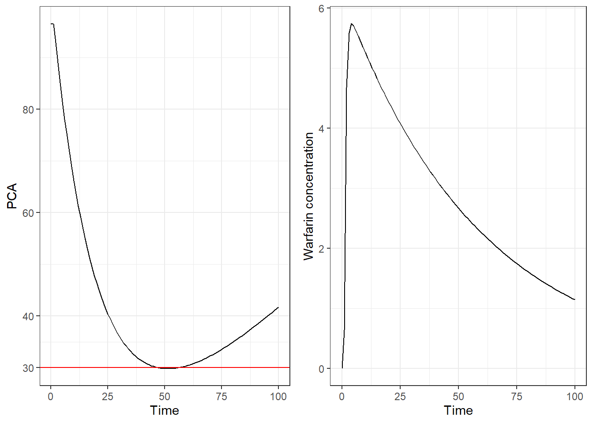

optiDoseR is a package to facilitate the application of the optiDose approach in Monolix, NONMEM, and nlmixr2.
The optiDose approach, first presented by Bachmann et al. (2021), introduced an algorithm to estimate therapeutic doses based on a pharmacometric model, such that therapeutic safety and efficacy targets are fulfilled. While initially, this approach was implemented in Matlab, in two follow-up publications, Bachmann et al. implemented their approach in NONMEM, a common pharmacometric software (Bachmann et al. 2023, 2024). In a later publication, the optiDose approach was further implemented in Monolix by Bräm et al. (2025).
The development version of optiDoseR can be installed from gitHub through:
devtools::install_github("braemd/optiDoseR")To use optiDoseR, an optiProject-object is initialized and all required information for the optiDose algorithm are added, i.e., a pharmacometric model, model parameters, dosing information, and therapeutic targets. Adding these information can be done in a pipeline using the pipe-operator.
When all required information are added, the optiProject-object can be transformed into the final model code and the data. In the following, the application of optiDoseR is presented on the example of Monolix. However, all shown principles can also be applied to NONMEM and nlmixr2 in a similar fashion. For more details, see the vignettes.
The application of optiDoseR is presented for the warfarin PKPD demo project in Monolix. The warfarin PKPD data includes warfarin PK measurements and PD measurements for platula coagulation activity (PCA). In this demonstration, it is assumed that the PKPD model was successfully developed and model parameters were estimated.
Initializing a optiProjcet is done with with the
newOptiProject function. In this step, it is required to
define the software for which the optiProject should be created. Note
that if a Monolix file should be created, the lixoftConnectors package
must be loaded and initialized.
warf_proj <- newOptiProject("Monolix")Since the pharmacometric (PMX) model was already fitted in Monolix,
this Monolix run can be added to the optiProject-object and all
information are added, i.e., the structural model and population and
individual parameters. If no already fitted PMX model is available, the
structural model and parameters can be added manually through
addPmxModel, addPopParms, and
addIndParms.
warf_proj <- warf_proj %>%
addPmxRun(pmx_file = "warfarinPKPD_project.mlxtran")In this demonstration, it is assumed that the therapeutic target is to have warfarin exposure as high as possible without PCA falling below 30.
The constraint on PCA can be added through the
addConstraintAUC function, in which the relevant state (in
the PMX model, PCA is called “R”), the limit (here 30), whether value
below or above should be penalized (here “below”), over what time range
the constraint should be applied (here from 0 to 200 hours), and at what
time the penalization should be evaluated (here at 200 hours) must be
defined.
A warfarin exposure as high as possible can be added through the
addSecondaryAUC function, in which the relevant state (here
concentration “Cc”), what values should be penalized (here low values),
and again penalization time range and evaluation time must be
defined.
warf_proj <- warf_proj %>%
addConstraintAUC(state = "R",
limit=30,
pen_time = c(0,200),
eval_time=200,
pen_values="below") %>%
addSecondaryAUC(state = "Cc",
pen_values = "low",
pen_time = c(0,200),
eval_time=200)Dose levels to be estimated can be added through
addDoseLevel. In this demonstration, we just add one dose
at time 0, and initial estimate for the dose should be 100.
warf_proj <- warf_proj %>%
addDoseLevel(time=0,ini_est = 100)When all relevant information are added to the optiProject-object,
the optiProject can be saved with the saveOptiProject
function. For this, a name and path under which the optiProject should
be saved can be defined. In this first example, we want to estimate the
dose for the typical individual, thus the argument
pop = FALSE is given.
saveOptiProject(optiProject = warf_proj,
name = "mlx_warfarin_optiProject_typical",
save_path = "./Files",
pop = FALSE)With saveOptiProject, a data file is generated that
includes dosing information, penalization information, and PMX
parameters to be used in the model:
opti_data <- read.csv("./Files/mlx_warfarin_optiProject_typical_data.csv")
print(opti_data)## ID TIME DV AMT EVID DOSE_NR Tlag_cov ka_cov V_cov Cl_cov R0_cov
## 1 1 0 . 1 1 1 0.9199587 1.404503 7.892726 0.1335147 96.53249
## 2 1 200 0 . 0 . 0.9199587 1.404503 7.892726 0.1335147 96.53249
## kout_cov Imax_cov IC50_cov
## 1 0.05421594 0.9959997 1.152217
## 2 0.05421594 0.9959997 1.152217The structural model provided through addPmxRun is
adjusted and required code chunks for therapeutic targets and dosing is
added. A .mlxtran file is generated with all required settings.
This can be run directly from R with the lixoftConnectors package or
from Monolix.
The optiProject can be exported form Monolix to Simulx to perform simulations with the estimated dose. In this case, simulations for warfarin concentration and PCA are performed with EBE dose. As can be seen, a dose is estimated with which the PCA doesn’t fall below 30 while maintaining a as high as possible warfarin exposure.
